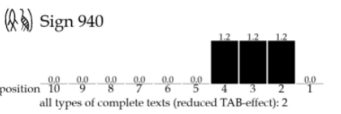

A fully responsive site template designed by HTML5 UP and released
for free under the Creative Commons license.
About Us
We are the Indus Valley Girls! We have been avidly working on this project. See below to learn a little more about us.
Keerthana Jayakumar
Lead Researcher and Data Analyst I studied Mechatronics Engineering at the University of Toronto and graduated with Honors. I recently completed the University of Toronto Data Analytics Bootcamp and am an aspiring Data Scientist. My interests include painting and hiking. For this project, I completed all the background research and created an algorithm strategy. I completed the conversion of Tamil from Syllabic to Logosyllabic on Pandas and stored the data into a PostgreSQL database hosted on an Amazon AWS cloud server. I also conducted the entire statistical analysis to identify similar distributions between Tamil and Indus Valley signs. This included calculating modified power law, creating positional histograms, segmentation trees and creating a deep neural network algorithm using Python’s Sklearn library.
Github Click to Visit my Github! Email me at keetu.jk@gmail.com Click here to connect with me on LinkedIn
Sonia Sharma
Data Visualization Lead I studied Electrical Engineering at McMaster University and am aspiring to go into the Data Science field. I recently completed the University of Toronto Data Analytics Bootcamp. My interests include dancing, singing, and watching movies. For this project, I created the Support Vector Machine Supervised Machine Learning algorithm to segment the morphemes used within the statistical analysis. I used Python Pandas library to extract the features and output label used for the model, along with the Sklearn and imblearn libraries for the model. I also created the Front-End design, integrating the interactive visualizations showcasing our project and results using HTML, CSS, and Javascript (D3.js, Three.js).
GithubClick to Visit my Github! Email me at soniashar95@gmail.com Click here to connect with me on LinkedIn
This project is an attempt to decipher the ancient Indus Valley script by comparing it with modern Tamil (a Dravidian language).
Our strategy is to:
Convert Tamil script from syllabic to logosyllabic by converting morphemes to signs.
Perform a statistical analysis to compare the converted script with the Indus script.
Tamil - A Dravidian language
Syllabic script - A writing system whose characters represent syllables.
Logosyllabic script - A writing systems whose characters represent syllables, words and morphemes.
Morpheme - The smallest part of a word that changes its meaning. Ex- 'ing' in 'following'
The Indus Valley or Harappan civilization is India's oldest civilization spanning from 5500 BCE to 1300 BCE. However, their writing system is still undeciphered. The obstacles to deciphering the script have included:
- The exact uses of the artifacts are mostly unknown.
- The root language of the script is unknown.
- The texts are short (mean = 4.5 signs).
- Lack of bilingual inscription/tablet, E.g. Rosetta stone which recorded two Egyptian scripts and ancient Greek
- The complete corpus of the text was not widely available.
Since 2013, however, there have been breakthroughs in the field of population genetics that have given clues about the root language of the script. The 2013 paper ‘South Asia: Dravidian Linguistic History’ authored by Professor Franklin C. Southworth and Dr David W. McAlpin reconstructed Proto Dravidian (one of the two main Indian language families) vocabulary and found similarities with Proto Elamite vocabulary (the language of the Zagros region).
Through their archeological and linguistic research, they were able to conclude that the Harappan language is most likely Proto Dravidian (with influences from Proto Elamite). Furthermore, it was concluded that this language has evolved into the major modern Dravidian languages (Tamil, Telugu, Kannada, etc). We are testing the hypothesis that Proto Dravidian is the language of the Harappans by comparing modern Tamil with the Harappan script.
The first step to compare the Indus script with Tamil is to convert Tamil from a syllabic to a logosyllabic script.
Similar to the Indus script, we modelled the structure of the syllables after cuneiform and created syllables of the forms CV, VC, V and C (Where 'C' is consonant and 'V' is vowel).
We used the labelled Tamil database provided by the Institute of Formal and Applied Linguistics (UFAL) See Tagged Dataset.
The dataset consists of Tamil news articles tagged by part of speech (POS).
Some of the morphemes including clitics and postpositions were already separated. However, the dataset does not separate noun and verb morphemes.
Tamil word morphology is exclusive to nouns and verbs. We split the database into morphemes, clitics, and lemmas and formulated tables stored in our PostgresSQL server.
We converted the lemmas and morphemes (including noun and verb morphemes as well as clitics, determiners, etc) into logograms (sign represents a word or morpheme)
by giving each of them their unique sign identifier.
The most frequent sign in the Tamil script is the plural marker ‘கள்’ (kal) or sign 4012. On analyzing the most frequent Indus signs, one sign had a very similar positional distribution: sign 220.
Sign 220 is a fish sign. Fish Signs are often associated with numerals. They also mostly occur in the medial context. It can be found in the initial, medial as well as terminal positions.
This behaviour was previously attributed to polyvalence but there is a possibility that the range is due to its function as plural marker. An analysis of sign groupings also shows that sign 220 occurs with multiple other signs (not just numerals). This further strengthens the case that it is the plural marker.
Deep Neural Network to Predict Syllables
We calculated the probability distribution of the normalized sign positions and used them as features in a deep neural network.
This was done to see if it is possible to predict if a sign is a syllable based on the positional distribution alone. It was previously hypothesized that a uniform frequency for all positions is a good indicator of a syllabic sign, since syllables are used everywhere in texts without syntactic restriction.
The result had a poor F1 score of 42% for predicting syllables. This shows that positional distribution alone is insufficient to predict syllables. This can be attributed to two reasons:
Sentences in the database are long and consist of multiple nouns followed by a verb. Tamil has a subject-object-verb syntax. This results in some noun lemmas and clitics having a uniform sign distribution similar to what is expected for syllables. The Indus artifacts have shorter sentences (suggests fewer nouns) so this problem may not exist when evaluating the Indus script.
FIX:
Perform the analysis on shorter sentences (simple Subject-object-Verb construction) and see if the machine learning precision/recall score increases.
Positional distribution alone is insufficient and there are missing variables.
FIX:
Include sign connectivities into the features table (E.g. include number of signs grouped with the sign in question) and see if that increases the score.
Statistical Tools:
Modified Power Law
We initially used the Modified Power Law to test if the script is logosyllabic. On calculating the modified power law for the converted Tamil script, the resulting value was G = -1.13 similar to Old Assyrian Cuneiform. This classifies the script as logosyllabic.
Histograms
We then calculated positional histograms to identify positional frequencies for each Tamil sign. Each bar represents where in a word, the sign is more frequently seen.
Keep in mind Tamil reads from left to right and Indus script reads from right to left. To see these some examples, see the dropdowns below showcasing Tamil and Indus script histograms. These histograms can be used to compare which Tamil and Indus valley signs have similar position frequency distributions.
Histogram for Tamil sign number 4000
Histogram for Tamil sign number 4001
Histogram for Tamil sign number 4005
Histogram for Tamil sign number 4006
Histogram for Tamil sign number 4007
Histogram for Tamil sign number 4008
Histogram for Tamil sign number 4009
Histogram for Tamil sign number 4012
Histogram for Indus sign number 415
Histogram for Indus sign number 455
Histogram for Indus sign number 520
Histogram for Indus sign number 575
Histogram for Indus sign number 705
Histogram for Indus sign number 741
Histogram for Indus sign number 760
Histogram for Indus sign number 803
Histogram for Indus sign number 832
Histogram for Indus sign number 838
Histogram for Indus sign number 840
Histogram for Indus sign number 940

Segmentation Trees
Another analysis tool we used were segmentation trees. We identified key sign pairs and calculated their connectivities. Using this, we created our segmentation trees. The higher
the segmentation tree, the higher the connectivity between the sign pair. We can then compare this to Indus sign groups. The goal is to identify morphemes with similar distributions in both scripts.
Found probability distributions of Tamil signs. Plan to automate comparing positional frequencies of Tamil and Indus scripts and find signs with matching distributions.
Use connectivities to identify morphemes in Indus script.
Use the Machine Learning model (outlined below) on a modern Tamil dataset with shorter sentences and on an old Tamil dataset to perform morpheme segmentation to use extracted morphemes in statistical analyses.
For this project, we had to manually identify and segment the morphemes. Going forward, we can automate this process. Automating it requires a tagged dataset which we did not have at the beginning of the project, hence the manual extraction.
We programmed a SVM algorithm to automatically perform morpheme extraction on Tamil. We referenced the paper 'Morpheme Extraction and Lemmatization for Tamil using Machine Learning' which used SVM to perform Tamil morpheme segmentation resulting in a high F score. Morpheme extraction is an essential part of morphological analysis.
After preprocessing, the words in our dataset and SQL tables were used for our SVM. We obtained the form, lemma, part of speech identifier, and identified the morphemes within each word. After consulting the paper 'Morpheme Extraction and Lemmatization for Tamil using Machine Learning’, we identified the current letter of the word, prefix, vowel/consonant, noun, and verb as vital features for the algorithm.
We programmed to manually fill the features_df with the appropriate features:
Identified if the current letter of the word was a vowel (1) or consonant (0)
Noted if the word was a noun indicated by a 1 and a verb represented by a 1 in their columns
Extracted the letters before the current letter to fill the prefix column
Added programming to identify the morpheme boundaries in each word as our output label for the model
Before implementing the model, Label Encoding was used on the letters column and prefix columns to allow for numerical values only. Features selected were the index, vowel/consonant, noun, verb, letter_label_encoded, and prefix_label_encoded. A Standard Scaler was applied to avoid numerical overflow while running the model. The output label for our model was defined as morpheme boundary.
We used a 75% training and 25% testing data split with a rbf kernel with a gamma of 0.8 to achieve an accuracy of 76%.

 Lead Researcher and Data Analyst
Lead Researcher and Data Analyst